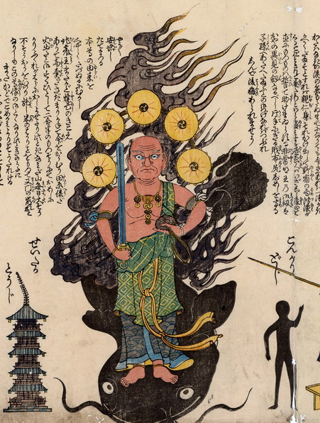

大きな鯰の上に不動明王が乗っている。光背のかわりに雷神のような連太鼓を背負い、背後の炎は黒い。右手に剣を、左手に財布を持っている。脇士にこんがりどうじとせいたかとうじを従えている。
出典：親書誌：U426_nichibunken_0177：（地震院火事落涙山非常明王開扉木札；ジシンインカジラクルイサンヒジョウミョウオウカイヒモクサツ）／日付：2010／資源識別子：U426_nichibunken_0177_0001_0000
Copyright (c)2010- International Research Center for Japanese Studies, Kyoto, Japan. All rights reserved.